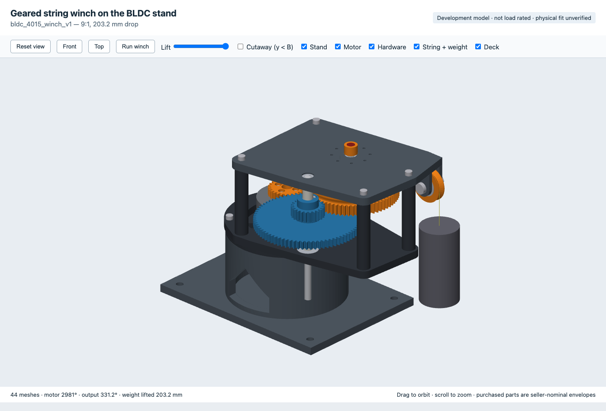

print-in-the-loop
Agent-driven parametric CAD for 3D printing: designs written as Python, proved with automated
geometry checks, reviewed in an interactive 3D page, then printed and measured.
Source, specs and checks: github.com/analogjedi/print-in-the-loop.

A 9:1 two-stage spur train (26→78, 23→69) from a gear on the motor's rotor to a string drum.
It lifts a hanging weight 203.2 mm in 0.92 of an output turn, so a single-turn encoder on the output
reads the weight's position absolutely. Press Run winch, drag the Lift slider, or use the cutaway.
Development model · not load rated · physical fit unverified · about 7 MB, needs WebGL